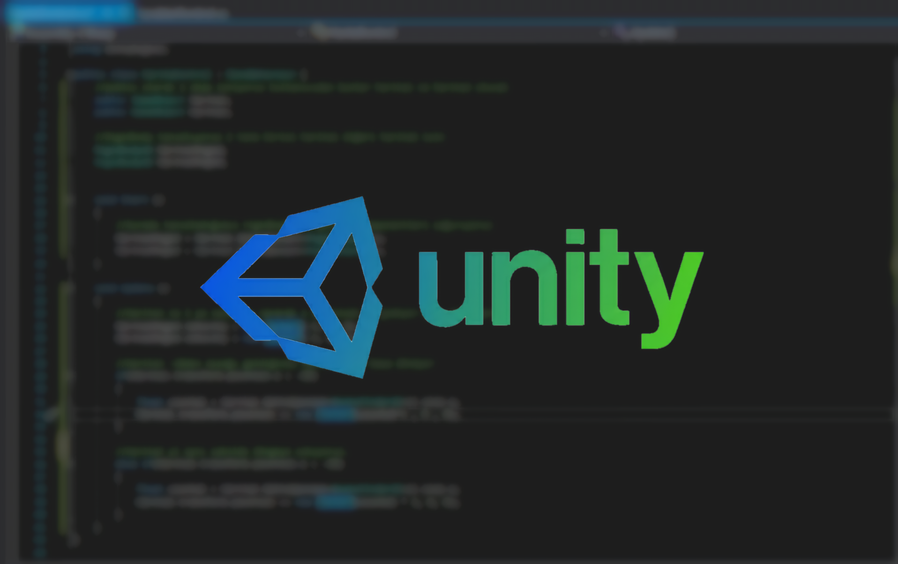

.png)
Misyon RootCode Teknoloji Topluluğu olarak amacımız teknoloji alanında hem yeni projeler üretip hem de var olan projeleri geliştirmek. Bu yolda sürekli yeni şeyler öğrenerek yapay zeka, oyun geliştirme ve siber güvenlik alanında yürüttüğümüz projeler ile üyelerimize hem bilgi katıyor hem de kariyer yolculuklarına destek oluyoruz.

Vizyon Hedefimiz sadece teknolojiyi tüketen değil üreten bir topluluk olmak bu amaç ile geliştirdiğimiz projelerin patentleri ile yenilikçi ve üretken bir kimliğe bürünerek ülkemizin teknoloji alanında yetkin bir teknoloji şirketi olmaktır.
HackerLab CTF (Capture The Flag) sınavlarına ait bir projedir. Bu projenin temel ve nihai amacı üyelere, katılımcılara temel Siber Güvenlik ve CTF bilgisi kazandırmaktır. Projenin nihayetinde gelişmiş değil temel eğitim ve bilgi vermektir. Bu projenin içeriğinde Siber Güvenlik ve CTF eğitimi yer almaktadır.


Görüntü İşleme ve Yapay Zeka Görüntü işleme teknolojisinin kullanıldığı bir projedir. Projenin temel ve nihai amacı patenti alınarak endüstiriyel alanda görüntü işleme teknolojisinin kullanıldığı makinelere yapay zeka destekli yerli yazılım üretmektir. Bu projenin içerisinde Pyhton temelli yapay zeka kullanılmaktadır.
Unity Oyun Geliştirme Unity ve C#'ın kullanıldığı bir projedir. Projenin amacı Unity ve C# tabanlı bir 2D oyun yapmak ve bu oyun ile Gamejam etkinliklerine katılmaktır. Bu projenin içerisinde Unity oyun motoru ve C# kullanılmaktadır.
